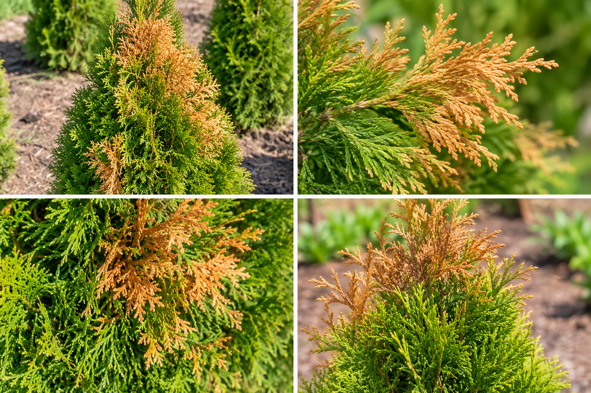

Весенние ожоги
Укрывать туи на зиму нужно, только если на них раньше бывали весенние ожоги. В первые дни весны, когда солнце уже активное, а корни ещё не оттаяли, следите за деревьями: хвоя может начать менять цвет. В этот момент полейте растение горячей водой, чтобы корни быстрее оттаяли. Важно не упустить этот момент, особенно если на ваших деревьях уже бывали весенние ожоги.
Почему возникают ожоги?
В конце зимы — начале весны хвоя просыпается под активным солнцем и начинает испарять влагу, но корни в промёрзшей земле не могут восполнить её потерю. Возникает физиологическая засуха. Снег вокруг туи отражает до 70–90% солнечных лучей и усиливает нагрузку, а зимние ветра дополнительно иссушают хвою. В итоге хвоя на солнечной стороне желтеет, буреет и может выглядеть выжженной. Особенно уязвимы молодые туи в первые 2–4 года после посадки: их корневая система ещё не развита.
Как распознать?
- Пожелтение или побурение обычно начинается с солнечной стороны кроны.
- Хвоя становится хрупкой и ломкой, иногда появляются залысины.
- При ожоге повреждения обычно более равномерные, без характерных пятен или следов насекомых. Важно не спутать их с дефицитом питания, болезнями или вредителями.
Что делать, если ожог уже есть?
- Санитарная обрезка. Не спешите вырезать сухие ветки: подождите до середины мая, когда станет ясно, какие побеги погибли, а какие могут восстановиться. Стерильным секатором удалите только полностью засохшие, ломкие ветви до здоровой зелёной ткани.
- Восстановление водного баланса. Как только почва оттает, начните обильный полив, полезно совмещать его с дождеванием кроны. Можно несколько раз с интервалом в пару дней пролить приствольный круг тепловатой водой (около 35–40 °C), лучше утром, чтобы вода впиталась и не превратилась за ночь в ледяную корку.
- Поддержка иммунитета и стимуляция роста. При стабильной плюсовой температуре, примерно от +10 °C, начните опрыскивания антистрессовыми препаратами: Эпин-Экстра, Циркон, Биосил или Изабион. Проведите 2–3 обработки с интервалом 7–10 дней. Иногда стимулятор комбинируют с фунгицидом, например Ракурсом. Также можно использовать препараты с аминокислотами, например Аминосил.
- Подкормка. Большая доза удобрений может навредить ослабленному растению. В первый месяц ограничьтесь листовыми подкормками. Первую корневую подкормку специализированным удобрением для хвойных с минимумом азота отложите до конца мая и уменьшите дозу вдвое.
Скорость восстановления зависит от повреждения: при лёгком ожоге (до 30% кроны) туя может восстановиться за один сезон, при среднем (30–60%) потребуется 1–2 года, при тяжёлом (более 60%) — 3 и более лет.
Как предотвратить в будущем?
- Притенение. В конце зимы — начале весны установите экран или притеняющую сетку с затенением 60–80% только с южной и юго-западной стороны. Полностью укрывать растение не обязательно. Между плотным укрывным материалом и хвоей оставьте воздушное пространство: скопившийся конденсат после снятия укрытия может сработать как линза и вызвать ожог.
- Уборка снега. Расчищайте снег в приствольном круге и убирайте мульчу с проблемной стороны, чтобы земля быстрее оттаяла, а корни раньше начали работать. Можно подсыпать на снег с солнечной стороны золу — она снизит отражение лучей.
- Осенний влагозарядковый полив. Проведите его, когда листья у лиственных деревьев уже опали, а земля ещё не замёрзла. Это создаст запас влаги и снизит риск весеннего иссушения.
- Выбор места. Если туя регулярно горит, несмотря на все меры, пересадка в полутень — под крону другого дерева или рядом со строением — может стать самым эффективным решением.
- Обработка антидесикантами. Некоторые препараты создают на хвое плёнку, снижающую испарение влаги и защищающую от перегрева. Их можно применять профилактически осенью и весной.
Главное — не паниковать при первых признаках: часто туя успешно перерастает повреждение, если ей вовремя помочь.
